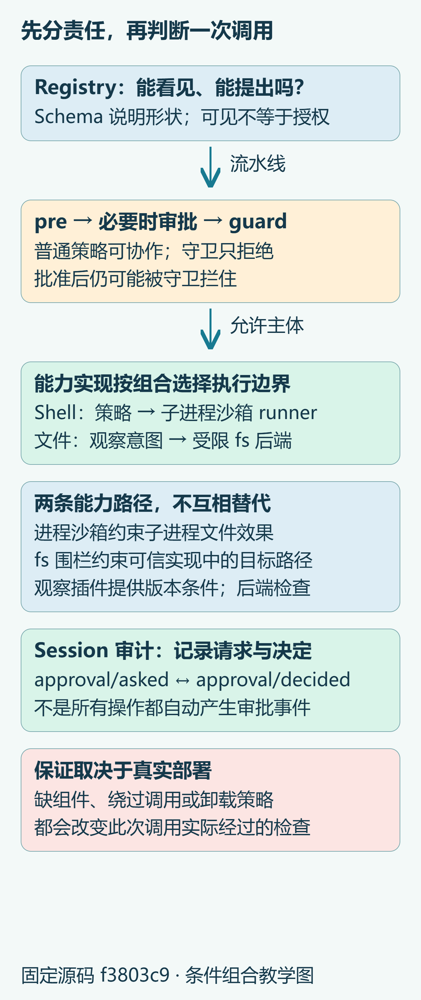
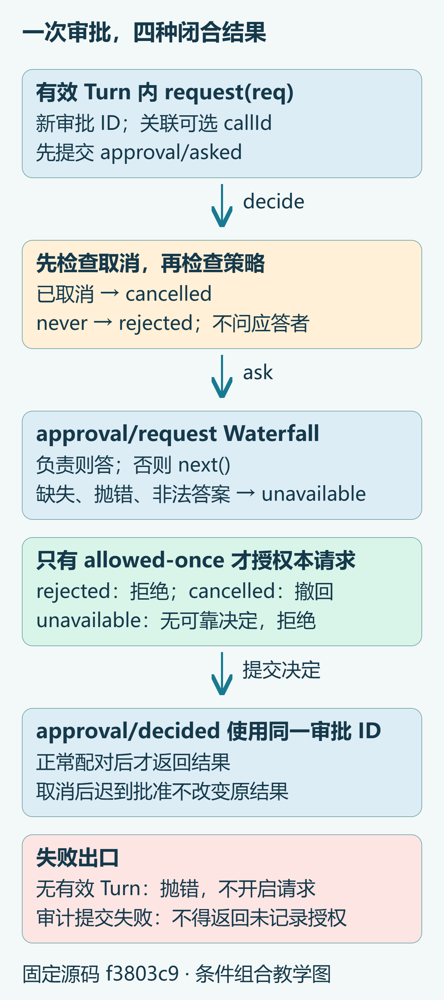
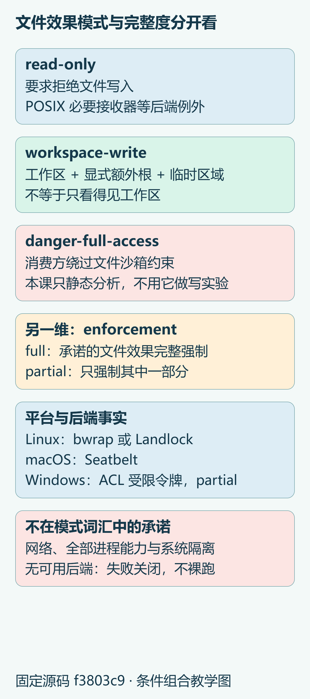
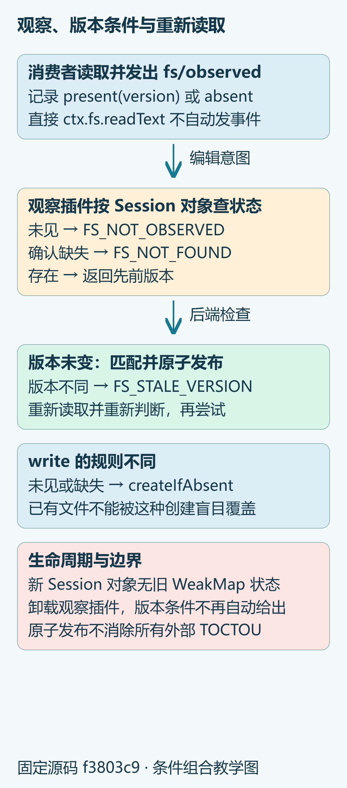

作者私有审查预览 · 实际LessonMarkdown与平台CSS · 未发布，未施测
第四模块集中审查 · H15
200～270 分钟（分三段；作者估算，环境准备另计，待真实试读）
“检查配置并修复构建”，究竟批准了什么？
用户只说：“检查项目配置，并修改某个文件解决构建错误。”模型可能先读取配置，再修改路径、执行测试、安装依赖，最后建议删除旧构建产物。前两项似乎合理，后几项也可能有用，但这些动作的影响范围并不相同。
如果路径写错，读取可能接触任务之外的数据，修改可能覆盖另一个项目；如果另一程序刚刚改过配置，按旧内容保存可能丢失新修改；如果没有人在场，审批不能一直等，更不能默认同意。如果执行环境没有可用沙箱，悄悄裸跑也没有兑现原来的约束。
这节围绕同一个任务回答：一次调用实际得到哪些能力，谁可以批准，谁还可以拒绝，执行时又由谁限制文件效果？ 先预测，再运行四项小实验，最后按证据检查自己的结论。课程不执行安装、删除或高权限 Shell；计算只在内存中，文件只用新建无敏感夹具。
源码锁定 f3803c96974ad4a94195fb97e5c637e9c2a3afe3，不是跟随最新分支。固定版本的官方安全说明把项目定位为尚未安全审计的实验软件；本课的局部验证也不构成正式安全审计。实验性状态
先接上 H13、H14，再补齐七个词
H13区分工具定义、可见集合与步骤准入；H14在真实流水线中区分 tools/pre-execute、审批解析、单调守卫和工具主体。我们只复用这些位置，不重新推导全部输出投影与批次调度。
H06的 Waterfall 是“当前监听器可以回答，也可以通过 next() 委托下游”；它不是把所有监听器的意见自动求最严格交集。H07的 Effect 将监听器、状态与资源退出绑定到所属插件；卸载后原有规则可能随之消失。H10的 AbortSignal 是取消通知；取消不会把已经发生的外部写入倒回去。
路径也先复习清楚：相对路径依赖某个 cwd，绝对路径有完整起点，但“绝对”不等于“在工作区内”。子进程是由父进程启动的另一个执行实体；父进程里的一次路径检查，不会自动限制子进程之后打开的所有文件。
把下面的词落到这次配置修改，再看定义：
| 先看具体问题 | 技术名称与含义 | 这个说法的局限 |
|---|---|---|
| 模型给出一个路径，谁来决定是否允许打开？ | Trust Boundary，信任边界：输入从较少信任的一方进入承担约束的实现 | 插件与宿主在同一进程时，不能把每个 Context 当成独立 OS 边界 |
| 只需修改本项目一份配置，为什么给整个磁盘写权限？ | Least Privilege，最小权限：仅授予这项任务所需的能力与范围 | 最小到什么程度仍需业务判断；合理权限也能被错误使用 |
| 没有可靠应答者或 runner 时怎么办？ | Fail Closed，失败关闭：不能确认允许或不能兑现约束时停止 | 并非所有业务错误都叫安全拒绝，仍须分类记录 |
| 审批通过后，为什么还检查文件路径和版本？ | Defense in Depth，纵深防御：不同机制处理不同失败位置 | 多层不等于天然独立；全部依赖同一错误配置仍可能失效 |
| 检查时路径在工作区，使用时父目录链接却换了呢？ | TOCTOU，检查与使用之间的竞态：检查成立的事实可能在操作前改变 | 缩短窗口能降低风险，不等于消除并发攻击 |
ctx.fs、ctx.shell 分别让插件能做什么？ | Capability，能力：可调用的操作与对应资源访问条件 | 持有服务引用不自动保证最小权限，具体后端与配置仍重要 |
| 事后怎样知道谁问了什么、最终怎样决定？ | Audit Log，审计日志：有身份关联的请求、决定等事实记录 | 记录事实不等于解释全部意图，更不等于磁盘已可靠落盘 |
“多道门”的类比有助于区分责任，却不能证明门彼此独立或无法绕过。下面直接用实际接口、插件组合和反例判断。
六层机制在回答六个不同问题

| 层 | 本次配置任务中回答的问题 | 不能替代什么 |
|---|---|---|
| 工具可见性与准入 | 模型是否看见工具，提出的调用能否进入处理？ | 不能独自限制一个已启动子进程的文件访问 |
| 执行前策略 | 此次调用应 allow、deny、ask 还是 cancel？ | 普通 Waterfall 的 deny 不自带不可放宽性质 |
| 用户审批 | 是否由负责的人工或受控应答者批准这个具体请求？ | 不代替路径、版本或 OS 约束 |
| 执行约束 | 本次能力的后端实际限制哪些文件效果？ | 不判断模型修改的配置是否正确 |
| 文件状态保护 | 是否见过此目标；版本是否仍符合条件？ | 不限制任意 Shell 命令的全部文件行为 |
| 审计记录 | 请求、决定与具体调用如何关联？ | 不自动产生模型可见的完整提示内容 |
Schema只验证参数形状。例如 file_path 是字符串，并不能证明它在任务工作区。用户批准“修改配置”也不能修正错误路径。即使文件效果被完整限制在允许区域，模型仍可能把配置值改错。三者都需要，但职责不同。
还有组合前提：并非所有 Profile 都挂载相同服务和后端，H08已说明 sdk-minimal 的真实策略配置也有自己的选择。要检查最终插件树及实际服务，不能从 Profile 名字猜安全等级。sandbox-policy
ApprovalService：一个请求，一个闭合结果
ctx.approval 由 ApprovalService 提供。调用方创建 ApprovalRequest，带上 agent、toolName、可选的 callId、原因和取消信号。通用工具流水线在最终前置决策为 ask 时调用它；具体文件/Shell消费者也可能为单次升权调用它。审批服务不是自动拦截所有工具的全局弹窗。serviceAsk
// 接口用法片段；agent 必须有处于有效 Turn 的真实 Session。
const outcome = await ctx.approval.request({
agent,
toolName: 'sum_fixture',
callId,
reason: '批准本次常量计算',
signal,
})
if (outcome !== 'allowed-once') {
// 调用方结束这一操作，不能把其余结果当作授权。
}ApprovalPolicy 确切只有 ask | never。ask 允许进入已组合的应答者决策链，并不表示批准；无人负责时返回 unavailable。never 在服务内部确定性拒绝询问操作，不调用应答者，后来 prepend 的监听器也不能越过它。已经取消的信号先返回 cancelled，因此“never 的所有请求必然都是 rejected”还要排除预先取消的情况。ApprovalPolicy / decide
四种 ApprovalOutcome 是闭合集合：
| 结果 | 含义 | 调用方应怎样处理 |
|---|---|---|
| allowed-once | 这个请求获得一次批准 | 只继续所问的具体操作，再经过其他有效检查 |
| rejected | 明确拒绝，或 never 策略拒绝 | 停止该操作并解释，不换路径绕过决定 |
| cancelled | 请求被撤回或已取消 | 停止；迟到答案不能重新授权 |
| unavailable | 没有可靠、合规的应答结果 | 失败关闭，不能猜测用户同意 |
服务通过带 agent 路由的 approval/request Waterfall 分发同一个只读请求。负责处理的应答者返回一种结果；不负责则 next()。同步抛错、异步拒绝、非法返回值和链末无人应答都归到 unavailable。Waterfall保留由哪个通道负责的组合空间；它并非“收齐所有人的投票再多数通过”。同进程应答者本身也是可信部署的一部分，恶意插件不能靠类型定义被隔离。decide
allowed-once 是调用方应遵守的一次性语义，不是一张可复制的永久凭据。服务每次请求生成新审批 ID，不按 callId 缓存授权；测试对同一个 callId 连问两次，第一次允许、第二次拒绝，各有一对独立审计记录。服务也不负责证明请求者之后确实只执行了一次。
取消与审计：先提交事实，再返回决定

正常请求顺序是：确认所属 Session 有尚未结束的 Turn；生成服务自己的 ApprovalRequestId；追加 approval/asked；取得结果；追加同 ID 的 approval/decided；然后返回结果。无有效 Turn 时在产生请求审计前抛错。若提交决定之前发生真正的日志写入失败，不能返回一个没有被可靠接受的授权。正常配对不表示故障情况下强行补造一个决定。request
审批 ID 与工具调用 ID 分工不同。一次调用可能有不同的审批请求，服务生成的 ID 配对问答；请求中的 callId 让应答 UI 或审计读者关联到既有工具调用。应答者收到的 ApprovalRequest 没有服务生成的审批 ID 字段，也不复制整份工具参数；不要在示例里读取 req.id。displayReason 可以用于本地化呈现，审计保存的是 reason 等请求事实，不能据此重建所有界面文本。ApprovalRequest / request
取消具有很具体的含义：审批 Promise 可以立即以 cancelled 结算，正在等待的应答者可能仍继续运行，但其迟到 allowed-once 不再改变结果。实践 A 用门闩保证顺序为“应答者进入 → abort → 请求先返回 cancelled → 再释放批准”。这与 H14 某些主体或策略代码需要协作结算的情形不同，不把“取消立即停止所有工作”推广到所有能力。
审计提交前失败与提交后观察者抛错也要分开：Session已经接受事件后，普通 session/event 观察失败会被约束和报告，不能简单等同于事件从未存在。实践 A 的审计故障注入明确拦在 approval/decided 提交之前；它验证不返回 grant，没有测试真实磁盘故障、断电或日志存储可靠性。decide
会话策略不是普通聊天消息
部署的默认 policy 由服务配置提供；会话最后一条 approval/policy 覆盖它。源码中的 effectivePolicy(session) 实现生效值回退，overrideOf(session) 只读日志覆盖，setApprovalPolicy 通过持久事件写入且校验合法策略。两个 Session 可以在同一部署下分别使用 never 与 ask。effectivePolicy / overrideOf
这里有固定版本差异：官方文档推荐消费方调用effectivePolicy，但实现把它声明为TypeScript private。随附实验用显式any与方括号读取作私有诊断，不将它当公开稳定API；授权仍以实际request结果为准。不能因为tsx能执行TypeScript private方法，就宣称该方法是公开契约。
可选的 SystemPrompt接线把当前完整含义作为名为 approval:policy 的运行时上下文贡献给请求装配。approval/asked、approval/decided 和 approval/policy 本身是 log-only，不等于模型对话正文。面向活跃 Agent 的 setPolicy(agent, policy) 还会在变化后注入带来源的切换说明；普通持久 helper 与这个面向运行中 Agent 的操作不要混用。当前上下文快照怎样成为后续模型请求输入，仍沿 H11/H12 的装配路径判断。Service.init / setPolicy
pre 的 allow 以后，单调守卫仍能拒绝
通用流水线先取得 tools/pre-execute 最终决策；如果是 ask，再请求审批并转成执行决定。只有最终 allow 才进入 checkGuards。所有者通过 ctx.tools.guard() 注册的检查只能拒绝或不表态；拒绝后不会回到普通策略链请另一个监听器重新授权。prepare
这项单调性属于可信插件约定下的守卫接口，不是抵抗同进程恶意代码的 OS 边界。普通 Waterfall 的外层监听器却可以在 await next() 后改写下游 deny。实践 B 把两者并排运行：
| 输入轨迹 | 审批 | 守卫 | 主体次数与结果 |
|---|---|---|---|
| pre allow | 不问 | 不表态 | 1，返回 5 |
| pre deny | 不问 | 不进入 | 0，失败 |
| pre ask，应答 allow | 允许一次 | 不表态 | 1，返回 5 |
| pre ask，应答 reject 或无人 | 非授权 | 不进入 | 0，失败 |
| 外层把普通 deny 改 allow | 不问 | 不表态 | 1，说明普通拒绝可被改写 |
| 同样改成 allow，但 guard 拒绝 | 不问 | 拒绝 | 0，失败 |
| pre ask 已批准，guard 拒绝 | 允许一次 | 拒绝 | 0，批准不能越过守卫 |
| 等审批时取消 | cancelled | 不继续授权 | 0，取消结果 |
工具成功或拒绝后的结果再按 H14 的分支处理。tools/result 是运行时最终结果观察，不等于已经写入 Session 的 tool/result。实践 B没有提供完整 Loop或工具日志 sink，因此保留真实 ToolResult和审批审计，不制造 Session工具结果记录。notifyResult
SandboxMode 只描述文件系统效果

| 模式 | 文件读取与写入的承诺 | 提供方是否被调用 |
|---|---|---|
| read-only | 要求拒绝文件写入；POSIX runner保留 /dev/null 等必要接收器，平台仍有各自边界 | 沙箱化进程消费者对受限模式调用 provider |
| workspace-write | 允许工作区、显式额外可写目录与后端定义的临时区域；不表示只看得见工作区 | 同上；应检查实际 enforcement |
| danger-full-access | 绕过文件沙箱约束，仍可能受宿主原有权限及其他机制影响 | bash/pwsh消费者直接走非沙箱执行，不调用 sandbox provider |
SandboxMode 不承诺网络隔离、全部进程能力控制或整个系统隔离。read-only不能据此推出“无网络”；workspace-write不能据此推出“其他目录不可读”。本课不把 danger-full-access 当实验默认值，相关绕过仅做静态分析。SandboxMode
full / partial 是另一维：前者报告该后端管控了模式所承诺的文件效果，后者只管控其中一部分。它不是模型质量、整套应用安全或正式审计等级。要求完整边界的消费者应拒绝 partial，或至少显式上报并由部署处理；不能改个标签继续宣称完整。
SandboxPolicy：这一次调用到底用哪份策略？
SandboxPolicyService 持有部署默认模式、无 Session时的工作区回退根与显式额外可写目录。实际能力调用通过 ctx.sandboxPolicy.resolve() 逐次取得完整策略，不应只在插件启动时读一次默认值。优先级确认为：调用方传入且已经获批的单次 mode → Session最后一条 sandbox/mode → 部署默认模式。resolve
// 只解析策略，不执行文件或进程；mode 的批准发生在调用方。
const ordinary = ctx.sandboxPolicy.resolve({ session: agent.session })
const once = ctx.sandboxPolicy.resolve({
session: agent.session,
mode: approvedMode,
})关键在“已获批”由可信调用方保证：resolve() 不弹窗、不替你调用 ApprovalService，它只是解析器。任意插件直接传一个更宽 mode，并不因为经过 resolve 就变成受控升权。
Session header 中不可变的 cwd 是该会话调用的 workspaceRoot；没有 cwd 才用部署回退根。cwd冻结保存的是执行世界的路径写法，并不代表其对应物理目录永远不变。服务检查绝对路径与 NUL 等语法条件，实际存在位置的规范化与目录合法性由执行端进一步检查。resolve / constructor
实践 C 的输入与预期如下：
| 对象 | 输入 | 解析结果 |
|---|---|---|
| 同一部署 | 默认 read-only，回退根 fixture | 无会话覆盖时 read-only |
| Session A | cwd=workspace，持久写入 workspace-write | workspace-write，根为workspace |
| Session B | cwd=extra，无持久覆盖 | read-only，根为extra |
| B本次批准 | 一次 approvedMode=workspace-write | 只有本次使用workspace-write |
| B下次普通调用 | 不再传mode | 回到read-only；B没有新增sandbox/mode |
| A重建新Session | 回放原事件和header | 持久模式仍为workspace-write |
sandbox/mode 是 log-only 的会话持久设置，setSandboxMode 追加这个事件；单次批准不应调用它来永久改变会话。sandbox:policy 运行时上下文说明当前策略，但不是后端可用能力清单。把“模型被告知了限制”和“执行端真正强制限制”分开验证。setSandboxMode
additionalWritableRoots 与临时目录不能省略
额外根是明确扩大写入范围的授权。固定版本共享根工具在实际宿主上要求额外可写根存在、为目录且采用物理规范路径；缺失、非目录或链接写法不合法时抛 SANDBOX_INVALID_ROOT。工作区根走canonicalPath，解析失败保留原写法，不执行这套额外根的严格校验。策略服务的语法校验与执行端的物理检查是不同阶段，远端执行世界也应由远端检查。additionalRoot / workspaceWritableRoots
workspace-write 的共享 writable roots还包含平台临时区域；所以本课在 os.tmpdir() 下创建的夹具，其兄弟目录未必是“越出所有可写根”。实验不能把临时目录外于 workspace 的一次成功误判成逃逸。Windows ACL进程后端不支持额外写根，会报不支持策略；不能从 fs-sandbox 支持该字段推断所有进程后端也支持。writableRoots
本地进程沙箱：选择 runner，不静默裸跑
SandboxProvider.confine(argv, policy, signal) 接收程序及参数数组，返回包装后的 argv、enforcement、拒绝签名和 runner失败分类规则；真正 spawn由消费方承担。传给provider的策略只有受限模式。不要把 argv数组拼接误当成所有工具都共用的一段Shell字符串。SandboxProvider / ConfinedArgv
| 平台 | 本地选择链与事实 | 本轮证据 |
|---|---|---|
| Linux | bwrap优先，再Landlock；多候选用功能探测选择，旧Landlock ABI可能partial | 代码/官方测试静态核对；provider选择用模拟探测实测；未启动原生runner |
| macOS | Seatbelt；单候选可直接选择，执行时拒绝仍须失败关闭 | 静态核对，原生未测 |
| Windows | ACL受限令牌runner，报告partial；原生调用有自己的权限与临时授权生命周期 | 静态核对；模拟选择/argv实测；ACL进程原生未测 |
“探测成功”与“选中单候选”也不同。固定版本允许单候选不做仲裁探测，不能把选中Windows runner写成已经验证它能够正确执行；runner启动、政策落实或执行前失败还要由消费方识别。配置自定义 runner也是部署者的断言，不是检测出来的完整隔离证据。chainVerdict / selectRunner
Windows的已知 partial边界包括：NTFS硬链接让同一文件对象可有不同路径别名；读取不受完整限制；AppContainer ACL树与低完整度子进程存在读取限制问题。工作区的 standing授权与每个活跃 Session/工作区随机私有临时目录的可撤销授权也有不同生命周期，不能把一次grant概括成“所有权限退出时全都撤销”。本课不创建这些进程授权，也不把真实文件原子替换测试当作ACL沙箱测试。STATIC_ENFORCEMENT / materializeAclGrant
无可用runner时，SANDBOX_UNAVAILABLE明确拒绝受限执行。消费者还要区分“沙箱正常工作，命令文件效果被拒绝”和“runner自身执行前失败”：后者可能依据非零退出、规定退出码及stderr致命签名综合归因，不能只看一个permission字样。bash与pwsh沙箱消费者都处理自身runner事实，没有合法的静默无隔离透传分支。SandboxBashExecutor.execute
宿主进程沙箱主要约束特定子进程的文件效果，并不因此等于完整容器或虚拟机。容器/虚拟机也有各自配置边界；本课不以这些名词互相替代保证。Linux/macOS/Windows原生runner均保留NOT_RUN，后续若要验证必须在对应平台上独立执行并记录。
文件观察：读过，还要确认版本没有变
配置最初是 mode=old。Agent读到它后，编辑器改成了 mode=external-longer。此时模型按旧内容保存，即使路径正确、审批通过，也可能覆盖他人的修改。
观察插件保存“这个Session对象对这个目标最近观察了什么”，再把它变成提供方的条件；提供方在变更时检查条件。它不负责读取文件，也不自己进行磁盘写入。ObservedStateGate

| 记录 | fs/edit-intent | fs/write-intent |
|---|---|---|
| 未见此目标，或无可用owner | FS_NOT_OBSERVED | createIfAbsent，只尝试不覆盖创建 |
| 确认缺失 absent | FS_NOT_FOUND | createIfAbsent |
| 存在 present(version) | 返回旧version作为编辑条件 | replaceIfVersion，携带旧version |
因此“没读过就禁止一切写入”不准确。未见目标可以防护创建；遇到已有文件必须拒绝盲目覆盖。确认缺失也不是授权编辑一个不存在的文件。后端版本不匹配时报告 FS_STALE_VERSION，而不是把错误伪装成新内容里找不到旧字符串。writeIntent / editIntent
fs/write-intent、fs/edit-intent 是无绑定carrier的单槽 Waterfall，默认返回undefined表示裸提供方操作；观察插件占据决定槽，不通过next累积最严格规则。由它占据该槽是部署约定，不是单调守卫那样的不可重新放行不变式。一个更早拦截事件、错误返回undefined的插件，或根本不分发事件的调用方，都可能绕开自动新鲜度条件。Events
fs/observed 是同步记录事件，监听器应同步且不抛错；它不是审批审计，也不是自动持久化观察表。模型文件工具负责发事件，直接 ctx.fs.readText 不自动发事件。直接调用方如果要使用观察策略，应明确采集权威版本并正确分发事件，不要仅因拿到文本就认为插件知道了这次读取。
插件按 WeakMap<Session对象, Map<targetKey, observation>> 存状态。不读取Session ID字符串作为key，所以同ID新建或恢复的Session对象也不会继承旧观察；插件卸载清空内存，重载从未见开始。持久的sandbox模式能回放，与文件观察不持久，是两种不同生命周期。clear / apply
fs-local、fs-sandbox 与原子发布
ctx.fs 是文件服务契约；fs-local提供真实本地后端；fs-sandbox继承本地原语并在write/edit前增加逐调用围栏。它们应按部署替换提供者，而不是同时注册两个同名fs服务。裸后端省略expected时允许无条件写/编辑；可选观察插件不会自动进入每次服务方法。SandboxedFileSystem
消费者先把输入解析成 FsTarget：targetKey 是后端拥有的不透明身份，displayPath 用于展示。子进程需要打开的坐标由 processPath 提供。即使本地targetKey看起来像绝对路径，也不能把这种实现细节推广到远端后端或自行解析所有key。FsTarget
fs-sandbox的读取不加这个写围栏；read-only拒绝所有变更；workspace-write在委托前重新规范化展示路径，检查新目标是否位于工作区、显式额外根或共享临时区域，并把新检查过的目标交给本地实现。danger模式直接不加围栏地委托。相似字符串前缀不是包含关系，符号链接与Windows别名也需要真实身份处理。checkedTarget
这些是可信实现中针对模型控制路径的检查，不是允许任意不可信代码运行的内核边界。源码明确接受“再次规范化后、系统调用前祖先链接被替换”的剩余TOCTOU风险。本课没有执行符号链接攻击，也没有证明该风险已消除。threat model
本地后端对同targetKey的变更用进程内锁串行化；先检查版本，再读取/匹配，写入私有暂存文件，最后原子发布。createIfAbsent用不替换的发布原语阻止创建时碰到已有文件；Windows替换还采用DACL复制与ReplaceFileW等实现。writeText / editText
要把“原子”讲准：原子发布使读者不看到一半的新文件，进程内锁使同提供方变更不互相穿插；版本前置检查降低旧内容覆盖风险。它不等于针对任意外部写入者的内核级compare-and-swap事务，外部程序仍可能在检查与发布之间改变事实。实践D只验证明确安排在检查之前的外部修改会被拒绝，不验证全部并发竞态。
一次性升权：显式请求、审批、只覆盖本次
某次只读策略拒绝写配置后，模型可以在支持这项能力的消费者中明确提出更宽模式与理由。共享 approveEscalation 检查当前有效模式与请求模式：相同模式直接返回，不需要新授权；真正扩大则必须在严格更宽表中，并具备审批服务与Agent；非授权结果抛错。参数配对另由 validateEscalationArgs 校验。approveEscalation
升权规则是：read-only可向workspace-write或danger扩大；workspace-write只能向danger扩大。实际应选择足以完成同一被拒绝操作的最窄更宽模式。Schema里的可选目标不等于此次已经获准，执行时还要根据会话当前策略判断。工具消费者拿到approvedMode后仅传入本次策略，不写sandbox/mode。execute / approveBashEscalation
共享helper并不核验“之前真的有一条被拒绝的完全相同命令”这一历史事实；同一操作重试是消费者协议与审批呈现要遵守的语义，不能把它宣传成helper自动验证的强绑定。显式审批前也不应先试着在宽权限下执行。即使批准，其他单调守卫、版本条件与适用约束仍有效。H20再展开未知结果、幂等和更完整重试，本课不在失败后自动循环升权。
实践准备：每次只触碰新夹具
四个程序都导入固定缓存中的官方组件，教学代码只搭建输入、应答者、门闩和断言。A使用真实Approval/Session；B再接Tools/Native/Pipeline；C组合真实策略与审批，并以模拟探测调用真实provider的选择算法；D用真实本地存储、fs-sandbox和观察插件。结构性Agent载体沿用官方组件测试方式，不是完整AgentLoop。
验证分级按本节约定：A为教学Mock；B为独立Cordis；C为真实官方组件；D为多个真实组件的局部组合；E为完整应用及原生平台后端集成。本轮18项C、13项D，共31项TAP检查；Cordis等依赖不重复计级，C/D中的受控应答者不是原生平台证据。E与三平台原生进程runner都未运行。
下载本课随附lab全部文件，保留文件名。作者仓库内可运行下面命令；runner先核验2218份固定源码/配置/文档字节，复制lab到全新临时目录，清理环境变量，并设置新的DSH_HOME，不使用模型凭据。依赖安装在仓库之外；Node需支持本示例使用的Node24 API。若缓存位置不同，按交付包README配置环境变量，不修改官方源码来迎合测试。
python docs/deepseek-harness-v2/h15/scripts/check-sources.py
node docs/deepseek-harness-v2/h15/scripts/run-labs.mjs预期报告是31项通过、0失败；故意错误答案程序必须非零退出。每次原始args、stdout、stderr、退出码、程序hash和临时路径保存在带时间戳的evidence中；不要只看最后一行PASS。
清理例外有明确来源：本工作区用户指令禁止批量删除。 程序自动创建隔离目录，自动逐个删除明确的夹具文件；官方原子写入默认的递归清理被专用清理钩子替换，每次只处理一个经核验的暂存文件，保留空目录。没有批量删除或要求学员关闭保护。复制到其他环境也可保留这一做法；空目录位置在输出中，可由所有者另行处理。
想深入再看：依赖接线完整程序
bootstrap.mjs 只把包名解析到锁定的隔离依赖，不改变官方实现。运行器还核对版本与上游integrity；安装来源与未运行的原生能力见交付包。
// Node 24：解析到隔离安装、与固定上游锁文件核对过的依赖。
import { registerHooks, createRequire } from 'node:module';
import { pathToFileURL } from 'node:url';
const req = createRequire(pathToFileURL(process.env.H15_DEPS_ANCHOR));
const extra = createRequire(pathToFileURL(process.env.H15_FS_DEPS_ANCHOR));
const zod = createRequire(pathToFileURL(process.env.H15_ZOD_ANCHOR));
const names=['js-yaml','@eslint-community/regexpp','ajv','node-addon-require-builtin','resolve.exports','semver'];
const entries=new Map(names.map(n=>[n,pathToFileURL(req.resolve(n)).href]));
for(const n of ['chokidar','koffi','yaml'])entries.set(n,pathToFileURL(extra.resolve(n)).href);
entries.set('zod',pathToFileURL(zod.resolve('zod')).href);
registerHooks({resolve(s,c,next){return next(entries.get(s)??s,c);}});想深入再看：完整公共准备
保存为support.ts。carrier仅提供真实Session与路由所需结构，没有模型、Shell或完整AgentLoop。主体调用由实践B中的真实工具执行器承担。
import { Context } from '@deepseek-ai/cordis';
import SessionStore, { SessionId, Session, SESSION_FORMAT_VERSION } from '@deepseek-ai/dsh-session';
import SessionProjectionRegistry from '@deepseek-ai/dsh-session-projection';
import SystemPrompt from '@deepseek-ai/dsh-system-prompt';
import ToolsService, { defineTool } from '@deepseek-ai/dsh-tools';
import { NativeToolExecutor } from '@deepseek-ai/dsh-tool-executor-native';
import { ToolCallId } from '@deepseek-ai/dsh-llm';
import ApprovalService from '@deepseek-ai/dsh-user-approval';
import SandboxPolicyService from '@deepseek-ai/dsh-sandbox-policy';
export { Context, SessionId, Session, defineTool, ToolCallId };
export const gate=<T=void>()=>Promise.withResolvers<T>();
export const textOf=(r:any)=>r.content?.filter((b:any)=>b.type==='text').map((b:any)=>b.text).join('')??'';
export const audit=(session:Session)=>session.snapshotEvents().filter(e=>e.type.startsWith('approval/'));
// 与官方 approval.spec 一致的结构性 Agent 载体；不是 AgentLoop 或完整应用。
export function carrier(ctx:Context,id='fixture',open=true,cwd?:string){
const session=cwd===undefined?ctx.sessions.create(SessionId(id)):
Session.create(SessionId(id),undefined,{version:SESSION_FORMAT_VERSION,id:SessionId(id),createdAt:0,isSeeded:false,cwd});
if(open)session.append('turn/start',{turn:1});
return {session} as any;
}
export async function components(options:{approval?:boolean;approvalConfig?:any;policy?:any;tools?:boolean}={}){
const ctx=new Context();
for(const p of [SessionStore,SessionProjectionRegistry,SystemPrompt])await ctx.plugin(p as any);
if(options.approval!==false)await ctx.plugin(ApprovalService,options.approvalConfig??{});
if(options.policy!==false)await ctx.plugin(SandboxPolicyService,options.policy??{});
if(options.tools!==false){await ctx.plugin(ToolsService);ctx.tools.setExecutor(new NativeToolExecutor(ctx));}
return {ctx,close:()=>ctx.fiber.dispose()};
}
export const call=(id:string)=>({type:'tool-call' as const,id:ToolCallId(id),name:'sum_fixture',arguments:'{"a":2,"b":3}'});实践 A：真实审批决策与审计
先预测allow、never、missing和late四个输入的结果，以及应答者会不会运行。再运行完整矩阵，逐项检查asked/decided的ID、callId和outcome，不把approval/policy误算成一条问答。
输入包括四种结果、无人、同步/异步异常、非法答案、next委托、预先取消、迟到批准、无Turn/已结束Turn与提交前审计故障。另有同callId重复询问及部署never/会话ask覆盖测试。输出保存 A_* 与原始TAP证据；验收同时要求结果、主体授权布尔值和审计事实一致。
想深入再看：实践 A 完整程序
保存为approval.ts。audit-fail改的是本夹具Session的提交入口，不修改固定源码；生产系统不能拿这种注入替代真实存储故障测试。
import { setApprovalPolicy } from '@deepseek-ai/dsh-user-approval';
import { components,carrier,gate,audit,ToolCallId } from './support.ts';
export const approvalCases=['allow','reject','cancel-answer','unavailable','missing','throw-sync','throw-async','invalid','delegate','never','pre-abort','late','idle','closed','audit-fail'] as const;
export type ApprovalCase=typeof approvalCases[number];
export async function approvalPractice(kind:ApprovalCase='allow'){
const h=await components({tools:false}),trace:any[]=[],entered=gate(),late=gate<any>();let answers=0,grant=false;
try{
const agent=carrier(h.ctx,'approval-'+kind,!['idle'].includes(kind));
if(kind==='closed')agent.session.append('turn/end',{turn:1,reason:{kind:'completed'}});
if(kind==='never')setApprovalPolicy(agent.session,'never');
const controller=new AbortController();if(kind==='pre-abort')controller.abort();
if(kind!=='missing')h.ctx.on('approval/request',async(req,next)=>{
answers++;trace.push({stage:'answerer',toolName:req.toolName,callId:req.callId,hasRequestId:'id' in req});entered.resolve();
if(kind==='delegate')return next();
if(kind==='throw-async')throw Error('controlled async answerer failure');
if(kind==='late'){await late.promise;trace.push({stage:'late-answer',outcome:'allowed-once'});return 'allowed-once';}
return ({reject:'rejected','cancel-answer':'cancelled',unavailable:'unavailable',invalid:'bad-answer'} as any)[kind]??'allowed-once';
});
if(kind==='throw-sync')h.ctx.on('approval/request',()=>{throw Error('controlled sync failure');},true);
if(kind==='audit-fail'){
// 受控故障：拦截提交之前，而不是让提交后的观察者抛错。
const append=agent.session.append.bind(agent.session);
agent.session.append=(type:any,...args:any[])=>{if(type==='approval/decided')throw Error('controlled audit commit failure');return append(type,...args);};
}
const pending=h.ctx.approval.request({agent,toolName:'sum_fixture',callId:ToolCallId('call-'+kind),reason:'批准本次常量计算',signal:controller.signal});
if(kind==='late'){
await entered.promise;controller.abort();
const outcome=await pending;trace.push({stage:'settled-before-late',outcome});late.resolve();
await new Promise(r=>setImmediate(r));
return {kind,outcome,answers,trace,audit:audit(agent.session),grant:outcome==='allowed-once'};
}
try{const outcome=await pending;grant=outcome==='allowed-once';return {kind,outcome,answers,trace,audit:audit(agent.session),grant};}
catch(error){return {kind,error:String(error),answers,trace,audit:audit(agent.session),grant};}
}finally{late.resolve();await h.close();}
}
export async function approvalPolicyPractice(){
const h=await components({tools:false});try{
const a=carrier(h.ctx,'policy-a'),b=carrier(h.ctx,'policy-b');setApprovalPolicy(a.session,'never');
const assembled=await h.ctx.systemPrompt.assemble({agent:a});
// 固定源码将 effectivePolicy 声明为 private；文档虽推荐它，仍只作诊断。
const effective=(session:any)=>(h.ctx.approval as any)['effectivePolicy'](session);
return {a:effective(a.session),b:effective(b.session),diagnostic:'private effectivePolicy access; not a public stable API',
override:h.ctx.approval.overrideOf(a.session),contexts:assembled.contexts,events:a.session.snapshotEvents(),
messages:a.session.deriveMessages()};
}finally{await h.close();}
}想深入再看：实践 A 详细参考答案
allow进入应答者并得到allowed-once；never在应答者前拒绝，answers为0。missing与next走链末返回unavailable；同步抛错、异步拒绝和非法返回值也不能升级成批准。预先取消先得到cancelled，不调用应答者。late的trace先出现answerer，再出现settled-before-late(cancelled)，最后才出现late-answer(allowed-once)；decided仍为cancelled且只有一条，没有第二次授权。
正常问答各有一条asked和decided，共享服务生成的审批ID；callId只在asked中关联具体工具调用，不能拿它替代审批ID。never还保留策略事件，所以完整audit可有三项；应先按事件类型分组。idle/closed在任何asked之前抛错。audit-fail只留下asked，调用Promise拒绝，grant为false；不能为了配对好看伪造decided。
策略测试中A为never、B仍ask，运行时上下文有approval:policy，但deriveMessages没有因log-only事件自动新增聊天消息。重复同callId测试得到两个不同审批ID及两对事件，第二次照样拒绝。若输出不符，先查应答者注册顺序、Turn是否打开与过滤事件的方法，不把失败关闭改成默认允许。
实践 B：批准后仍然可能到不了主体
这是一个只返回2+3的真实工具。先按前面的八行表画轨迹，再查看 B_* 的pre、outer、approval-answer、guard、body和tools/result。额外输入pre-abort在批次起点已取消，不能强行要求它也走完整流水线观察。
验收：allow、ask-allow、override-deny三项主体各1次且值为5；其余主体0次。approved-guard既有allowed-once审计，也必须没有body。cancel-approval不因受控应答者随后返回允许而执行。它验证了真实流水线接入审批与守卫的局部组合，没有测试文件/Shell安全。
想深入再看：实践 B 完整程序
保存为pipeline.ts。这里明确使用普通Waterfall改写deny作对照；不要把这种演示监听器复制为安全部署规则。
import {components,carrier,defineTool,call,gate,audit} from './support.ts';
export const pipelineCases=['allow','deny','ask-allow','ask-reject','ask-missing','guard','override-deny','override-guard','approved-guard','cancel-approval','pre-abort'] as const;
export type PipelineCase=typeof pipelineCases[number];
export async function pipelinePractice(kind:PipelineCase='allow'){
const h=await components(),trace:any[]=[],entered=gate(),late=gate<any>(),controller=new AbortController();let bodies=0;
try{
const agent=carrier(h.ctx,'pipeline-'+kind);
h.ctx.tools.register(defineTool({name:'sum_fixture',description:'仅计算两个整数之和，不访问文件或Shell',
parameters:{a:{type:'integer',required:true},b:{type:'integer',required:true}},
output:{schema:{type:'integer'},render:(_a,v)=>[{type:'text',text:String(v)}]},
async execute(a){bodies++;trace.push({stage:'body'});return a.a+a.b;}}));
if(kind.startsWith('override'))h.ctx.on('tools/pre-execute',async(_exec,next)=>{
trace.push({stage:'outer-enter'});const d=await next();trace.push({stage:'outer-return',from:d.kind,to:'allow'});return {kind:'allow'};});
h.ctx.on('tools/pre-execute',async(_exec,next)=>{
trace.push({stage:'pre'});
if(kind.startsWith('ask')||kind==='approved-guard'||kind==='cancel-approval')return {kind:'ask',reason:'本次计算需要应答'};
if(kind==='deny'||kind.startsWith('override'))return {kind:'deny',reason:'普通拒绝'};
return next();});
if(kind!=='ask-missing')h.ctx.on('approval/request',async()=>{
trace.push({stage:'approval-answer'});entered.resolve();
if(kind==='cancel-approval'){await late.promise;return 'allowed-once';}
return kind==='ask-reject'?'rejected':'allowed-once';});
h.ctx.tools.guard(()=>{trace.push({stage:'guard'});return ['guard','override-guard','approved-guard'].includes(kind)?'所有者守卫拒绝':undefined;});
h.ctx.on('tools/result',(_exec,result)=>trace.push({stage:'tools/result',result:structuredClone(result)}));
if(kind==='pre-abort')controller.abort();
const pending=h.ctx.tools.execute({calls:[call('sum-'+kind)],agent,signal:controller.signal});
if(kind==='cancel-approval'){await entered.promise;controller.abort();late.resolve();}
const batch=await pending;
return {kind,bodies,trace,result:batch.results[0].result,audit:audit(agent.session),
boundary:'Actual Tools/Native/Pipeline + Approval + real Session; structural Agent; no Loop or Session tool-result log sink'};
}finally{late.resolve();await h.close();}
}想深入再看：实践 B 详细参考答案
allow在pre委托链末得到allow，guard不表态，主体返回5。deny短路后不需要审批，也不检查guard。ask-allow先经真实ApprovalService，允许后才到guard；ask-reject与ask-missing都生成非授权决定，主体不启动。override-deny中外层确实收到了deny并改为allow，所以普通拒绝不能承担不可放宽约束。
override-guard保留同样的外层allow，但之后的guard返回拒绝原因，主体次数仍为0。approved-guard先有allowed-once，再有guard拒绝，恰好说明审批与所有者约束处理不同问题。cancel-approval先让应答者挂起，再abort，工具主体没有开始；最终失败/取消ToolResult与审批cancelled相符。pre-abort则在批次更早位置跳过，没有审批事件，不应编造guard或tools/result行。
判断顺序要同时看trace、bodies与result，而不是只搜索“允许”一词。失败结果并不保证所有阶段都运行过。这里没有工具日志sink，因而不能声称观察到Session的tool/result；要分析提交位置，回到H14的真实Loop证据。
实践 C：两个 Session，一次批准，三类证据
先填写Session A/B与一次覆盖的表，再观察 C_policy。原生层保持不开启：provider只包装 fixture-command-never-executed，没有spawn。probe钩子分别返回不可用、full与partial，Windows选择也只生成argv。strictConsumer 是教学判定“若要求full应怎样处理”，不是已经运行了真实bash/pwsh消费方。
验收：A持久workspace-write可回放；B单次扩大后仍read-only；不可用抛SANDBOX_UNAVAILABLE而无裸argv返回；缺失额外根抛SANDBOX_INVALID_ROOT；full与partial保留不同报告；无理由、非更宽模式或无审批服务的扩大请求失败。实际根中须计入临时区域。
想深入再看：实践 C 完整程序
保存为sandbox.ts。真实policy、真实审批和真实provider选择算法是受测对象；平台探测结果与launcher路径是明确替身。
import { mkdtemp,mkdir } from 'node:fs/promises';
import { tmpdir } from 'node:os';
import { resolve } from 'node:path';
import { setSandboxMode } from '@deepseek-ai/dsh-sandbox-policy';
import { LocalSandboxProvider } from '@deepseek-ai/dsh-sandbox-local';
import { workspaceWritableRoots,writableRoots,approveEscalation,validateEscalationArgs } from '@deepseek-ai/dsh-sandbox';
import { components,carrier,Session,audit,ToolCallId,Context } from './support.ts';
export async function sandboxPractice(){
const fixture=await mkdtemp(resolve(tmpdir(),'aifoundry-h15-policy-'));
const workspace=resolve(fixture,'workspace'),extra=resolve(fixture,'extra');await mkdir(workspace);await mkdir(extra);
const h=await components({tools:false,policy:{workspaceRoot:fixture,additionalWritableRoots:[extra]}});
try{
const a=carrier(h.ctx,'sandbox-a',true,workspace),b=carrier(h.ctx,'sandbox-b',true,extra),p=h.ctx.sandboxPolicy;
const initial=p.resolve({session:a.session});setSandboxMode(a.session,'workspace-write');
const sessionA=p.resolve({session:a.session}),sessionB=p.resolve({session:b.session});
h.ctx.on('approval/request',async()=> 'allowed-once');
const mode=await approveEscalation({requestedMode:'workspace-write',effectiveMode:'read-only',justification:'仅批准夹具配置更新',subject:'operation'},
{approver:h.ctx.approval,agent:b,callId:ToolCallId('escalate-fixture'),toolName:'fixture-write'});
const once=p.resolve({session:b.session,mode}),after=p.resolve({session:b.session});
// 相同 ID 的全新 Session，从真实事件重建持久模式。
const restored=Session.create(a.session.id,a.session.snapshotEvents(),a.session.header);
const replay=p.resolve({session:restored});
const roots=workspaceWritableRoots(sessionA),allWritable=writableRoots(sessionA);
let invalidRoot:any;try{workspaceWritableRoots({...sessionA,additionalWritableRoots:[resolve(fixture,'missing')]});}catch(e:any){invalidRoot={code:e.code,message:e.message};}
const reports:any[]=[];
// 只调用真实 provider 的选择/argv 包装算法；所有探测均被测试钩子替代，没有 spawn。
for(const kind of ['unavailable','full','partial','windows-partial'] as const){
const owner=new Context();
const local=new LocalSandboxProvider(owner,{runnerCommand:[],runnerFailureSignatures:[],probeTimeoutMs:100});
local.internals=kind==='windows-partial'?{chain:['windows-acl'],windowsAclRunnerArgs:['fixture-runner-never-executed']}:
{chain:kind==='unavailable'?[]:['bwrap','landlock'],probeBwrap:()=>kind==='full',probeLandlock:()=> 'partial',landlockLauncher:'fixture-landlock-never-executed'};
try{const wrapped=await local.confine(['fixture-command-never-executed'],{mode:'read-only',workspaceRoot:workspace});
reports.push({kind,verification:'SIMULATED_PROBE_REAL_PROVIDER',...wrapped,strictConsumer:wrapped.enforcement==='full'?'would-accept':'would-refuse'});
}catch(e:any){reports.push({kind,verification:'SIMULATED_PROBE_REAL_PROVIDER',code:e.code,message:e.message});}
// 没有 workspace-write ACL grant，dispose 不触发目录清理。
await owner.fiber.dispose();
}
let malformed:any,narrower:any,missingApprover:any;
try{validateEscalationArgs('workspace-write',undefined);}catch(e){malformed=String(e);}
try{await approveEscalation({requestedMode:'read-only',effectiveMode:'workspace-write',justification:'bad',subject:'operation'},{} as any);}catch(e){narrower=String(e);}
try{await approveEscalation({requestedMode:'workspace-write',effectiveMode:'read-only',justification:'fixture',subject:'operation'},{} as any);}catch(e){missingApprover=String(e);}
return {fixture,host:{platform:process.platform,arch:process.arch},initial,sessionA,sessionB,once,after,replay,roots,allWritable,invalidRoot,reports,
malformed,narrower,missingApprover,audit:audit(b.session),aEvents:a.session.snapshotEvents(),bEvents:b.session.snapshotEvents(),
contexts:(await h.ctx.systemPrompt.assemble({agent:a})).contexts,
native:{linux:'NOT_RUN',darwin:'NOT_RUN',windowsACL:'NOT_RUN'},cleanup:'Empty fixture directories retained under no-bulk-delete instruction'};
}finally{await h.close();}
}想深入再看：实践 C 详细参考答案
部署默认read-only，A记入sandbox/mode后变workspace-write，B没有覆盖仍read-only；两个会话根来自各自cwd。B经真实审批得到一次workspace-write，resolve带mode才使用它，随后不带mode立即回到read-only。B事件里没有sandbox/mode，说明它没有被永久放开。A的同ID新Session从事件重建后仍workspace-write，这是持久状态的回放。
missing额外根在物理根校验时报SANDBOX_INVALID_ROOT；这与provider选择没有可用链时报SANDBOX_UNAVAILABLE不同。模拟bwrap成功报告full；模拟Landlock返回partial，程序保留该事实，并给出严格消费者应拒绝的教学判断。Windows只读模拟包装同样报告partial，未启动受限令牌runner，也未授予真实工作区ACL。
不能据此填写“Linux沙箱验证通过”或“Windows隔离已验证”。本轮实际宿主是Windows，真实policy与文件后端在该宿主运行，但三平台进程runner均NOT_RUN。即使full分支返回了完整argv，也只证明选择和包装在这组受控输入下正确，不证明内核已执行所有限制。
实践 D：真实文件、真实观察策略、受控外部修改
先预测：直接readText后能否edit？同ID恢复Session是否有旧观察？插件卸载后read-only是否还拒绝？再运行 D_files，按label逐项检查。本程序里的consumer是明确的夹具适配器：它调用官方fs事件并保存版本，没有把它命名为模型文件工具，也没有提前开发H16。
输入文件固定为新目录中的 fixture.cfg，先创建 mode=old。正常编辑后外部writeFile仅改这一夹具，再用旧观察尝试编辑，应该报FS_STALE_VERSION。重读更新观察后恢复编辑。之后单个删除此明确文件，记录缺失并防护创建；最后测试卸载、重载与后端围栏。
想深入再看：实践 D 完整程序
保存为filesystem.ts。自动清理仅涉及明确夹具文件与每次已知的单个暂存文件，空目录保留。Windows上未替换platform、DACL或ReplaceFileW原语，实际使用宿主本地实现；这仍不是Windows进程ACL沙箱。
import assert from 'node:assert/strict';
import { mkdtemp,writeFile,unlink,stat } from 'node:fs/promises';
import { tmpdir } from 'node:os';
import { resolve,dirname,basename,relative,isAbsolute } from 'node:path';
import SandboxedFileSystem from '@deepseek-ai/dsh-fs-sandbox';
import * as Observation from '@deepseek-ai/dsh-fs-observation-policy';
import { components,carrier,Session } from './support.ts';
export async function filesystemPractice(){
const fixture=await mkdtemp(resolve(tmpdir(),'aifoundry-h15-files-')),file=resolve(fixture,'fixture.cfg');
const h=await components({tools:false,policy:{mode:'workspace-write',workspaceRoot:fixture}}),trace:any[]=[],retained:string[]=[];
let stageFile:string|undefined;
const inside=(p:string)=>{const r=relative(fixture,resolve(p));assert.ok(r!==''&&!r.startsWith('..')&&!isAbsolute(r),'fixture containment');};
const exists=async(p:string)=>{try{await stat(p);return true;}catch(e:any){if(e.code==='ENOENT')return false;throw e;}};
const code=async(label:string,fn:()=>any)=>{try{const value=await fn();trace.push({label,value});return value;}catch(e:any){trace.push({label,code:e.code,message:e.message});return e.code;}};
try{
await h.ctx.plugin(SandboxedFileSystem,{cwd:fixture});
// 官方原子发布实现原封不动；只替换清理钩子，禁止上游默认递归 rm。
// 每次只删除一个经过 containment 与名称核验的明确临时文件；留下空目录。
(h.ctx.fs as SandboxedFileSystem).internals={
inspectTemp({stagingDir,tempPath}){inside(tempPath);assert.equal(dirname(tempPath),stagingDir);assert.equal(basename(tempPath),'fixture.cfg.tmp');stageFile=tempPath;},
async removeStagingDir(dir){inside(dir);assert.ok(stageFile&&dirname(stageFile)===dir);if(await exists(stageFile))await unlink(stageFile);retained.push(dir);stageFile=undefined;},
};
const policy=await h.ctx.plugin(Observation),a=carrier(h.ctx,'fs-a'),actor={agent:a},target=await h.ctx.fs.resolve(file);
const mode=h.ctx.sandboxPolicy.resolve({session:a.session});
const wi=(who:any=actor)=>h.ctx.waterfall('fs/write-intent',target,who,()=>undefined);
const ei=(who:any=actor)=>h.ctx.waterfall('fs/edit-intent',target,who,()=>undefined);
const observe=async()=>{
const info=await h.ctx.fs.stat(target);if(!info){h.ctx.emit('fs/observed',target,{kind:'absent'},actor);trace.push({label:'observe-missing',code:'FS_NOT_FOUND'});return;}
const content=await h.ctx.fs.readText(target);h.ctx.emit('fs/observed',target,{kind:'present',version:info.version},actor);trace.push({label:'observe',content,version:info.version});
};
const edit=async(oldString:string,newString:string,who:any=actor)=>h.ctx.fs.editText(target,{oldString,newString,replaceAll:false},await ei(who),undefined,mode);
await code('create-unseen',async()=>h.ctx.fs.writeText(target,'mode=old\n',await wi(),undefined,mode));
await h.ctx.fs.readText(target);await code('direct-read-no-observation',()=>ei());
await observe();await code('normal-edit',()=>edit('old','new'));await observe();
await code('unseen-session-edit',()=>edit('new','no',{agent:carrier(h.ctx,'fs-unseen')}));
await writeFile(file,'mode=external-longer\n');trace.push({label:'external-fixture-write'});
await code('stale-edit',()=>edit('new','bad'));
await observe();await code('refresh-edit',()=>edit('external-longer','fresh'));await observe();
const restored=Session.create(a.session.id,a.session.snapshotEvents(),a.session.header);
await code('restored-same-id',()=>ei({agent:{session:restored}}));
await code('read-only-denied',()=>h.ctx.fs.writeText(target,'forbidden',undefined,undefined,{...mode,mode:'read-only'}));
inside(file);await unlink(file);await observe();await code('missing-edit',()=>ei());
await code('guarded-create-after-missing',async()=>h.ctx.fs.writeText(target,'mode=recreated\n',await wi(),undefined,mode));
await code('same-create-cannot-overwrite',async()=>h.ctx.fs.writeText(target,'bad',await wi(),undefined,mode));
await observe();await policy.dispose();
const unguarded=await ei();trace.push({label:'plugin-unloaded',guardIsUndefined:unguarded===undefined});
await code('unguarded-current-edit',()=>edit('recreated','unguarded'));
// 观察策略卸载后，fs-sandbox 的 read-only 围栏仍存在。
await code('unloaded-still-read-only',()=>h.ctx.fs.editText(target,{oldString:'unguarded',newString:'bad',replaceAll:false},undefined,undefined,{...mode,mode:'read-only'}));
const finalContent=await h.ctx.fs.readText(target);
await h.ctx.plugin(Observation);await code('remount-lost-state',()=>ei());
inside(file);await unlink(file);
return {fixture,file,host:process.platform,trace,finalContent,fileRemoved:!(await exists(file)),retainedDirectories:[fixture,...retained],
scope:'Actual local storage + fs-sandbox + observation + Session; explicit fixture consumer emits official events; no model-facing tool-fs, no OS process sandbox',
nativeFilePublication:process.platform==='win32'?'Actual Koffi DACL copy / ReplaceFileW, no platform override':'Actual host rename/link',
limits:'No concurrent symlink/hostile race, no atomic-CAS proof against arbitrary external writers; no recursive cleanup; empty directories retained'};
}finally{
// 一次仅一个明确夹具文件；不扫描目录、不过滤后批量删除。
inside(file);if(await exists(file))await unlink(file);
await h.close();
}
}想深入再看：实践 D 详细参考答案
create-unseen返回create，因为观察策略给的是createIfAbsent。直接readText没有发fs/observed，因此direct-read-no-observation仍为FS_NOT_OBSERVED。显式observe记录权威版本后normal-edit成功；另一个Session未见文件，编辑拒绝。外部先写入更长内容后stale-edit使用旧version，后端在匹配旧字符串前拒绝为FS_STALE_VERSION；重新observe后refresh-edit成功。
restored-same-id仍是FS_NOT_OBSERVED：Session的持久事件能回放，不会复制以旧Session对象为key的WeakMap。read-only-denied验证fs-sandbox仍在后端拒绝变更。删掉明确夹具后observe记录absent，missing-edit得到FS_NOT_FOUND；write意图变createIfAbsent并创建成功。未再更新观察前重复相同创建不能覆盖已有文件，报FS_NOT_OBSERVED。
卸载策略后edit-intent返回undefined，裸版本条件消失，当前内容编辑成功；但换成read-only的后端调用仍FS_SANDBOX_DENIED，说明两层约束独立存在。重载观察插件丢失旧状态，再次FS_NOT_OBSERVED。最终内容mode=unguarded，明确文件已删除，空目录列在retainedDirectories。
这个实验没有制造检查与发布之间的恶意竞态，没有验证符号链接换祖先攻击，也没有把一次原子替换当作外部并发CAS证明。若真实后端不能运行，应保留错误及平台未验证记录，不能把editText换成自制字符串替换后继续记真实PASS。
想深入再看：统一运行入口
保存为demo.ts；由作者runner在隔离副本中运行，它输出全部A/B场景与C/D完整证据。随附safety.test.ts提供31项断言，negative-answer.ts故意把“批准绕过守卫”预测为真，预期失败。
import {approvalPractice,approvalCases,approvalPolicyPractice} from './approval.ts';
import {pipelinePractice,pipelineCases} from './pipeline.ts';
import {sandboxPractice} from './sandbox.ts';
import {filesystemPractice} from './filesystem.ts';
for(const kind of approvalCases)console.log('A_'+kind,JSON.stringify(await approvalPractice(kind)));
console.log('A_policy',JSON.stringify(await approvalPolicyPractice()));
for(const kind of pipelineCases)console.log('B_'+kind,JSON.stringify(await pipelinePractice(kind)));
console.log('C_policy',JSON.stringify(await sandboxPractice()));
console.log('D_files',JSON.stringify(await filesystemPractice()));回到配置修改：按组合定位每个检查
假定部署确实挂载Tools/Native/Pipeline、Approval、SandboxPolicy、fs-sandbox、观察插件，以及正确发事件的文件消费者。它读取配置并记下版本v1，然后模型提出edit。可以按下面的责任清单追踪：
- Registry查工具与调用身份；H13的可见性和Schema仍不等于权限。
- 通用流水线取得pre决策；需要ask时在有效Turn中取得审批。
- 最终allow之后检查单调guard；拒绝则不进入主体。
- 文件消费者在自己的主体内解析本次Session策略，处理显式升权请求，并取得fs/edit-intent的版本条件。
- fs-sandbox重新检查目标路径与写模式，再委托本地后端；后端检查v1是否仍匹配，匹配才进行编辑和原子发布。
- 消费者在适当时机更新观察并形成工具结果；通用流水线继续其适用的project/post/finalize与观察，若有日志接线再提交Session工具结果。
- 审批服务在请求过程中记录asked/decided；没有询问就不能凭空补审批审计。
注意这里“取得意图”在消费者里，而“检查版本”在后端里；模式解析也不是通用Pipeline统一调用的阶段。换成Shell能力，主体会把策略交给shell执行器，由它调用进程sandbox provider，不自动经过fs/edit-intent。没有观察插件的文件组合会失去自动新鲜度条件；裸fs-local不因为传入策略参数就获得fs-sandbox围栏。这是多条接线的责任核对，不能画成所有工具共享的一条固定总链。file tool execution
如果构建仍失败，不应自动删除目录或扩大到danger。先报告哪层拒绝、是否有已发生效果、哪份证据可靠，再根据任务需要决定是否重新读取、缩小修改或明确请求一次更宽授权。复杂重试和未知结果处理留到H20。
十道推导题：先写结果，再展开理由
思考1｜配置推导。 部署ask，Session记never，后来有prepend应答者总返回allowed-once。信号未取消。结果是什么，应答者运行吗？
想深入再看：思考 1 参考答案
结果是rejected，应答者不运行。有效策略优先读取Session最后的approval/policy，never在服务内部、Waterfall分发前决定，prepend只能改变应答者链的顺序，不能把它搬到服务策略判断之前。若信号已取消，则先返回cancelled；两个结果都不授权。配置判断需写清信号前提，不能只记一句“never永远拒绝”。
思考2｜轨迹推导。 pre外层await next得到deny，然后返回allow；随后guard返回“禁止”。工具主体运行几次？若guard不存在呢？
想深入再看：思考 2 参考答案
有guard时0次，最终allow之后才检查它，拒绝后没有普通策略链重新放行。无guard且没有取消或其他失败时1次，因为普通Waterfall外层已把下游deny改写成allow。这解释了为什么所有者的不可放宽规则要使用适合的守卫接口，而不是依赖普通监听器登记在最后。接口单调性仍以可信插件遵守调用约定为前提，不抵抗同进程恶意修改。
思考3｜事件推导。 审批先cancelled，迟到答案为allowed-once。为什么不能再追加第二条decided来启动原工具？
想深入再看：思考 3 参考答案
原请求已经撤回并完成，迟到批准不再拥有这次决定权。为同一个请求再造授权决定会破坏审计与执行的一致性，并可能在用户以为任务停止后启动工具。服务的race结算只保留先得到的有效结果；实践A释放迟到门闩后也不会改变原decided。若用户明确重试，应创建新请求、关联新的问答事实，不能把旧迟到答案当永久许可。
思考4｜配置推导。 默认read-only，A持久workspace-write，B无覆盖；B有一次批准的workspace-write。两次普通调用和一次覆盖调用分别是什么？
想深入再看：思考 4 参考答案
A普通调用是workspace-write，B普通调用是read-only，B带批准mode的那次是workspace-write；B之后普通调用仍read-only。优先级是已批准单次mode、会话覆盖、部署默认，不会把一次参数自动写成sandbox/mode。resolve本身不验证批准，所以还必须检查是谁提供了mode、是否经过真实审批，以及B的事件中是否意外多出持久设置。
思考5｜文件轨迹。 readText成功但没有fs/observed，随后edit-intent会怎样？确认缺失后write与edit又怎样？
想深入再看：思考 5 参考答案
有观察插件且没有别的槽位覆盖时，直接readText仍未记录观察，edit-intent得到FS_NOT_OBSERVED。确认缺失的观察允许write取得createIfAbsent，只能在不存在时创建；edit则FS_NOT_FOUND。若无观察插件，默认意图是undefined，不能套用上述拒绝结论。保护的前提包括正确发事件的消费者、所属Session对象及遵守条件的后端，文本读取成功本身并不满足全部前提。
思考6｜full是否意味着安全？ 一个full文件效果runner中，模型把本项目配置值改错，并向网络发送允许读取的数据。full能否证明这些事不会发生？
想深入再看：思考 6 参考答案
不能。full只报告该后端对模式承诺的文件效果实施完整程度，没有判断业务修改正确性，也没有在这个词汇里承诺网络隔离。获准写入的配置仍可被写错，获准读取的数据也不因此得到用途限制。需要额外的任务校验与独立网络等控制，并按真实部署验证；给同一个runner再贴“安全”标签不会增加它实际承担的责任。
思考7｜平台外推。 模拟bwrap探测成功、返回full；Windows文件编辑也成功。能否写Windows原生进程沙箱通过？
想深入再看：思考 7 参考答案
不能。前者只测试真实provider在模拟探测结果下选择与包装，后者测试可信fs实现中的真实宿主文件原语，二者都没有启动Windows ACL受限令牌runner。该后端固定报告partial，还存在硬链接、读取与AppContainer ACL边界。报告应分实际宿主、受测组件、替身及未运行能力，Linux或macOS的原生通过也不能替Windows原生验证签字。
思考8｜为什么先读仍要重读？ 文件观察后被外部编辑器修改，为什么不能继续使用旧version，或简单捕获错误后无条件覆盖？
想深入再看：思考 8 参考答案
旧观察是过去事实，外部修改后它不再说明当前内容。FS_STALE_VERSION要求重新读取、比较新内容并重新判断修改是否仍适用；捕获后去掉expected会绕过原本保护他人修改的条件。重读也只是更新依据，不保证模型修改正确或消除下一次检查与发布之间的全部竞态。恢复应结合结果与任务意图，而不是为了PASS把保护删掉。
思考9｜Scope为什么不等于OS权限？ 某工具只对Agent A可见，能否据此允许它启动任意不可信代码？
想深入再看：思考 9 参考答案
不能。Scope约束注册、发现与事件路由等同进程组合行为，不是内核对这个进程打开文件、创建子进程或访问网络的权限限制。一个已启动的不可信子进程不会自动按工具注册Scope执行。必须另查所挂载执行器、逐调用策略与可用后端；即使有沙箱，也要检查其文件效果与full/partial边界，不能把同一个“隔离”词推广到不同层面。
思考10｜无人审批、runner不可用。 为什么不分别默认同意和裸跑一次？请同时说明审计能解决什么、不能解决什么。
想深入再看：思考 10 参考答案
无人审批时没有可负责的授权决定，应返回unavailable并拒绝；受限执行没有可兑现约束的runner，应报SANDBOX_UNAVAILABLE。默认同意或裸跑会在条件缺失时反而扩大能力，违反失败关闭。审计能保留请求、具体调用关联和决定，支持追踪与诊断，但记录一次危险裸跑不能使它变安全，也不能证明未记录的效果没有发生，更不能单靠内存接受事件证明真实存储已可靠持久化。
完成标准与下一讲边界
请用自己的话说明一次配置修改的六层责任，给每层一个不能解决的反例；独立推导两条审批轨迹、两个Session的策略与一次陈旧编辑；能从原始结果指出真实组件、模拟边界和NOT_RUN，而不是只复述术语。
作者已验证局部组件行为、静态预览、真实Renderer及三宽度交互；没有真实学员试读、实际学习时长、独立安全审计或完整应用E验证。课程预计时长按三段安排：审批与守卫、沙箱与平台、文件实验与综合推导；可隔日完成，环境准备时间另计。
H16将研究真实文件、Shell、Web、MCP等消费者怎样发现、调用与组合能力。带过去的是：可见不等于授权；resolve不等于审批；fs围栏不等于进程沙箱；观察状态不等于持久Session配置；原始结果、实时观察与审计日志分开核对。H20再处理更完整取消、重试、未知副作用和恢复。本课到此停止，不以配套练习提前替代后续课程。